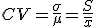

Estadística
coeficiente de variación
Se define como la razón entre la desviación típica y la media. Es una medida de dispersión relativa y se usa para comparar la dispersión de dos o más poblaciones.

Ejemplo. Si la media del conjunto A es 10 y SA = 3, y la media del conjunto B es 15 y SB = 4, el conjunto A tiene más dispersión relativa que B porque CVA= 0,3 y CVB= 0,27
Ejercicio. Calcula el coeficiente de variación de los dos ejercicios del apartado de medidas de centralización
Solución: 1.- CV=0,54; 2.- CV=0,42
Obra publicada con Licencia Creative Commons Reconocimiento No comercial Compartir igual 4.0